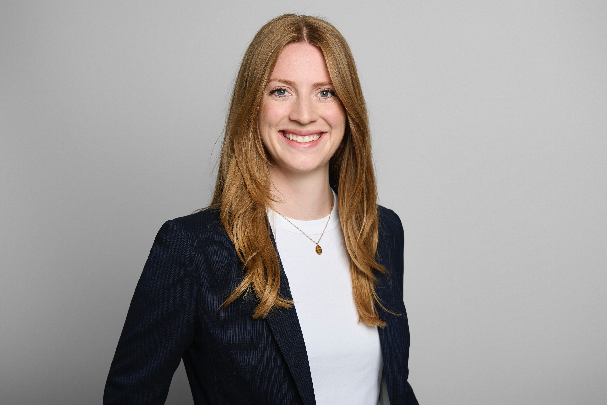

Doktorandin und akademische Mitarbeiterin
Saskia Braun
Universität Konstanz
Mehrsprachigkeitsforschung · Pädagogisches Translanguaging · Deutsch als Fremd- und Zweitsprache

01
Profil
Über mich
Ich bin Doktorandin und akademische Mitarbeiterin am Zentrum für Mehrsprachigkeit und am Sprachlehrinstitut der Universität Konstanz.
Meine Arbeit verbindet Forschung und Lehre in den Bereichen Mehrsprachigkeit, pädagogisches Translanguaging und sprachliches Lernen in heterogenen Klassen. Darüber hinaus lehre ich im Bereich Deutsch als Fremd- und Zweitsprache (DaF/DaZ).
02
Forschung · Dissertationsprojekt
Die Effektivität von pädagogischem Translanguaging beim Erwerb des Deutschen
Mein Dissertationsprojekt ist in das europäische ACTIN-Projekt eingebettet. Es untersucht die Effektivität pädagogischen Translanguagings beim Erwerb der deutschen Kasusmorphologie durch mehrsprachige Schüler:innen in sprachlich heterogenen Klassen.
Im Mittelpunkt steht die Frage, inwiefern die gezielte Einbeziehung der gesamten sprachlichen Repertoires der Lernenden den Erwerb des strukturellen Akkusativs, des strukturellen Dativs und der Wechselpräpositionen unterstützt. Dabei wird auch untersucht, ob pädagogisches Translanguaging wirksam sein kann, wenn Lehrkräfte die Herkunftssprachen ihrer Schüler:innen nicht sprechen.
Die Studie folgt einem unterrichtsbasierten experimentellen Interventions- und Kontrollgruppendesign mit Prä- und Posttests. Einbezogen werden Regelklassen an Grundschulen sowie Vorbereitungsklassen in der Primar- und Sekundarstufe I.
Laufzeit
2025–2028
Betreuung
Prof. Dr. Theodoros Marinis (Universität Konstanz)
Prof. Dr. Bernhard Brehmer (Universität Konstanz)
Prof. Dr. Despoina Papadopoulou (Aristoteles-Universität Thessaloniki)
03
Wissenschaftskommunikation und Transfer
Vorträge & Workshops
Konferenzbeiträge
Pädagogisches Translanguaging in sprachlich heterogenen Klassen: Potenziale, praktische Umsetzung und empirische Untersuchung, International Graduate School GFL, Pädagogische Hochschule Freiburg & German Jordanian University, online, Oktober 2026
Pedagogical Translanguaging in Second Language Learning and Teaching, Erasmus+ BIP Staff Training Week, Thessaloniki, Mai 2026
ACT and Connect for INtegration: Language Learning and Cultural Awareness (mit Theodoros Marinis, Andrea Young, Maria Zerva, Justine Holtzweiler, und Karina Al-Katauneh), European Civil Society Platform for Multilingualism , Saarbrücken, März 2026
Reinforcing Integration through Language Learning and Cultural Awareness: The ACTIN Project (mit Karina Al-Katauneh), 11th EDiLiC Conference on Plurilingual Literacies in Education: Pluralistic Approaches Inside and Beyond the Classroom, Universität Hamburg, Juli 2025
Wissenstransfer & Outreach
Pädagogisches Translanguaging als Ansatz zur Mehrsprachigkeitsförderung, Steuerungsrunde „Durchgängige Sprachförderung und Sprachbildung für Kinder und Jugendliche“, Rathaus Stuttgart, Juli 2026
Das mehrsprachige Klassenzimmer: Umgang mit Mehrsprachigkeit im Fachunterricht (mit Ramona Baumgartner), Lehrerseminar Rottweil, Rottweil, Juli 2026
Pädagogisches Translanguaging als Ansatz zur Mehrsprachigkeitsförderung im DaZ-Unterricht, Netzwerk DaZ Ringvorlesung: Perspektiven der Fachdidaktik DaZ in Baden-Württemberg, online, Juni 2026
Mehrsprachigkeitsförderung im Deutschunterricht, Workshop für Lehrkräfte im Rahmen des Programms "Mehr Sprachen - mehr WIR", Deutsche Kinder- und Jugendstiftung, Berlin, März 2026
Sprache als Ressource: Pädagogisches Translanguaging als Ansatz zur Mehrsprachigkeitsförderung im Unterricht, Fachveranstaltung „Mehr Sprachen – mehr WIR“, Deutsche Kinder- und Jugendstiftung, online, September 2025
03
Lehre
Lehrveranstaltungen
Universität Konstanz
Didaktisch-methodische Grundlagen „Deutsch als Fremdsprache“ I (WiSe 2022–2026)
Didaktisch-methodische Grundlagen „Deutsch als Fremdsprache“ II (WiSe 2022–2026)
Grundlagen DaZ (SoSe 2025)
Grammatikvermittlung und Schreibdidaktik (SoSe 2023)
Sprachkurs: Im Dialog (B1) (WiSe 2023–2026)
Sprachkurs: Grammatik und Schreiben (B1) (SoSe 2023)
Sprachkurs: Hör- und Sprechfertigkeit (B1) (WiSe 2022–2023)
Universität Stuttgart
Deutsch als Fremdsprache A2.1 für englischsprachige Masterstudierende (SoSe 2022–2024)
SQ: Sprachpaten (SoSe 2018–2020)
SQ: Im Dialog mit Geflüchteten (SoSe 2018–2020)